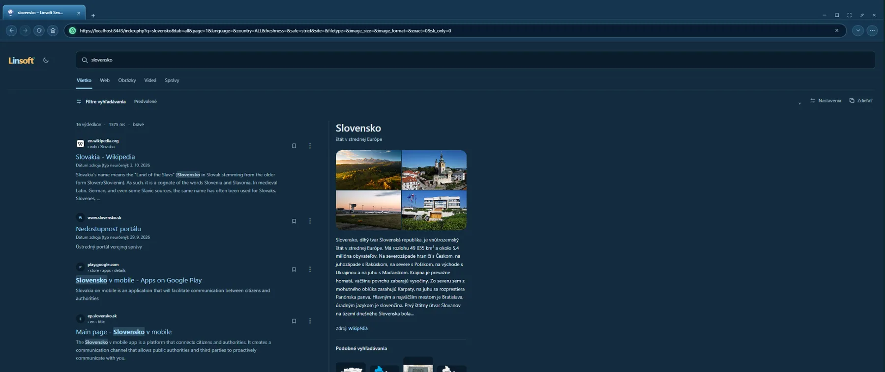
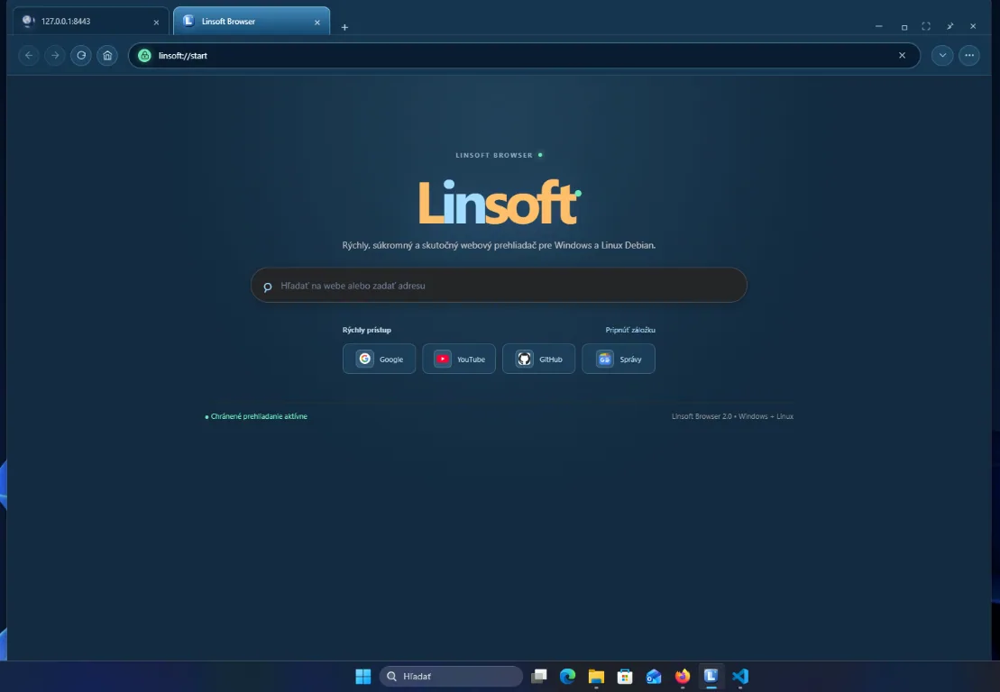
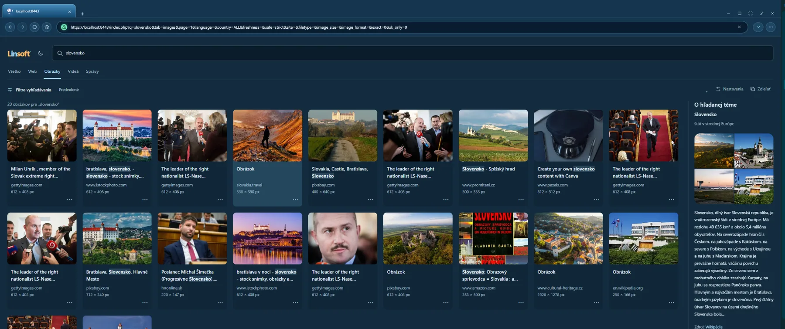
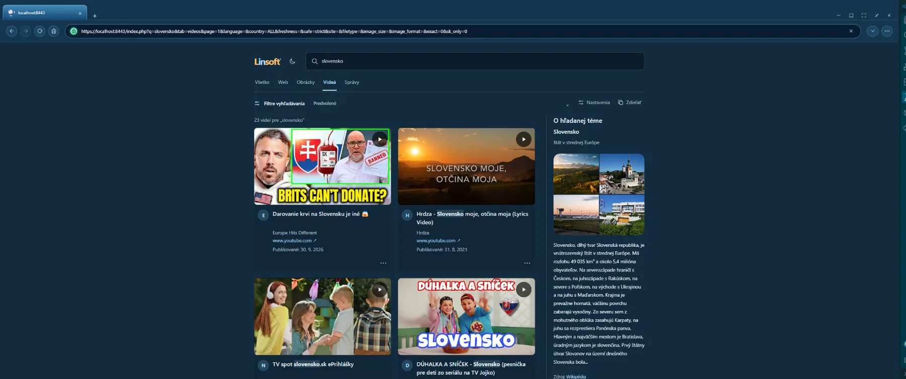
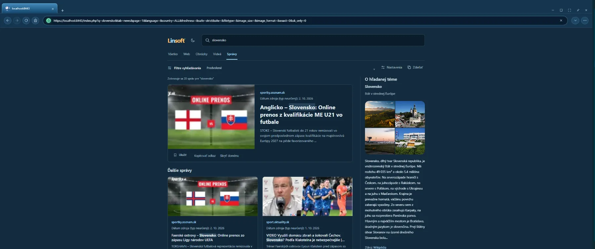

Linsoft Browser spája každodenné prehliadanie webu s užitočnými nástrojmi pre Windows a Debian Linux. Zdrojový kód Linsoftu je otvorený pod licenciou MIT.
Váš nový priestor na webe
Prehľadná domovská stránka, rýchle vyhľadávanie a všetko dôležité vždy poruke.

Pozrite sa dovnútra
Jasné výsledky na webe, obrázky, videá aj správy — v jednom prehliadači a v jednotnom dizajne.



Prezrite si video výsledky a ich náhľady bez zbytočného hľadania.
Zobraziť obrázok ↗
Prečítajte si prehľadné spravodajské výsledky a súvisiace články.
Zobraziť obrázok ↗Základné nástroje na prehliadanie webu spolu s voliteľnými možnosťami pre pokročilejších používateľov.
Otvárajte viac stránok v kartách a používajte známe ovládanie pre návrat, obnovenie a vyhľadávanie webových stránok.
Vyhľadávajte webové stránky, obrázky, videá aj správy a výsledky si otvárajte priamo v kartách prehliadača.
Ukladajte si obľúbené stránky a vracajte sa k predchádzajúcemu prehliadaniu cez históriu a panel záložiek.
Spravujte stiahnuté súbory cez vstavaný panel sťahovania.
Využite centrum aplikácií a podporu inštalácie webových aplikácií priamo z prehliadača.
Otvárajte miestne PDF súbory v integrovanom prehliadači a využite podporu OpenVPN, ak ju potrebujete.
Rozšírené možnosti zahŕňajú statické onion stránky a súkromný 1 : 1 chat cez Tor. Nie sú potrebné na bežné prehliadanie.
Počítačová aplikácia je dostupná pre Windows a Linuxové distribúcie založené na Debiane, napríklad Ubuntu.
Pre koho je Linsoft?
Linsoft je počítačový prehliadač pre každodenné používanie s možnosťami navyše, keď ich potrebujete.
Pre ľudí, ktorí chcú karty, záložky, históriu, vyhľadávanie a sťahovanie v jednej aplikácii.
Pre každého, kto si chce prezrieť zdrojový kód, vytvoriť vlastnú úpravu alebo prispieť k projektu.
Pre používateľov počítačov s Windows alebo Debian/Ubuntu Linuxom, ktorí hľadajú alternatívny prehliadač.
Pre používateľov, ktorí cielene potrebujú onion hosting alebo Tor chat a rozumejú ich obmedzeniam.
Dôležité: Linsoft automaticky nesmeruje všetku bežnú prevádzku cez Tor a negarantuje anonymitu. Navštívené weby aj poskytovatelia vyhľadávania môžu prijímať údaje o požiadavkách podľa vlastných pravidiel. Tor chat a hosting sú samostatné, voliteľné funkcie.
Linsoft je nezávislý projekt počítačového prehliadača vytvorený Martinom Pastorekom. Spája každodenné surfovanie s praktickými nástrojmi a voliteľnými funkciami pre ľudí, ktorí si radi upravujú svoj softvér.
Prehliadač je postavený na technológiách Electron a Chromium a cieli na Windows a Debian Linux. Vývoj prebieha verejne na GitHube: možno si prezrieť zdrojový kód, nahlásiť problém a navrhnúť zlepšenie.
Projekt sa volá Linsoft a jeho cieľom je vytvárať použiteľný softvér s otvoreným zdrojovým kódom, transparentnými právami a užitočnými možnosťami — bez predstierania, že otvorený kód sám osebe zaručuje súkromie alebo bezpečnosť.
Otvorený zdrojový kód
Zdrojový kód vytvorený pre Linsoft Browser je zverejnený pod licenciou MIT. Môžete ho používať, študovať, upravovať a ďalej šíriť — aj ako súčasť komerčného projektu — ak spolu s kódom zachováte príslušné oznámenie o autorských právach a text licencie.
Prečítať úplné znenie licencie MIT ↗Rozsah licencie: MIT sa vzťahuje na pôvodný kód Linsoftu uvedený v repozitári. Electron, Chromium a ďalšie knižnice majú vlastné licencie. Ochranné známky a cudzie obrázky alebo texty, ktoré sa môžu zobrazovať na screenshotoch či navštívených weboch, týmto nie sú prevádzané na MIT. Pri ďalšom šírení hotových inštalátorov si skontrolujte licencie a oznámenia pribalených komponentov.
Máte otázky? Tu sú odpovede na tie najčastejšie.
Vyberte si verziu pre váš operačný systém a začnite objavovať web bez hraníc.